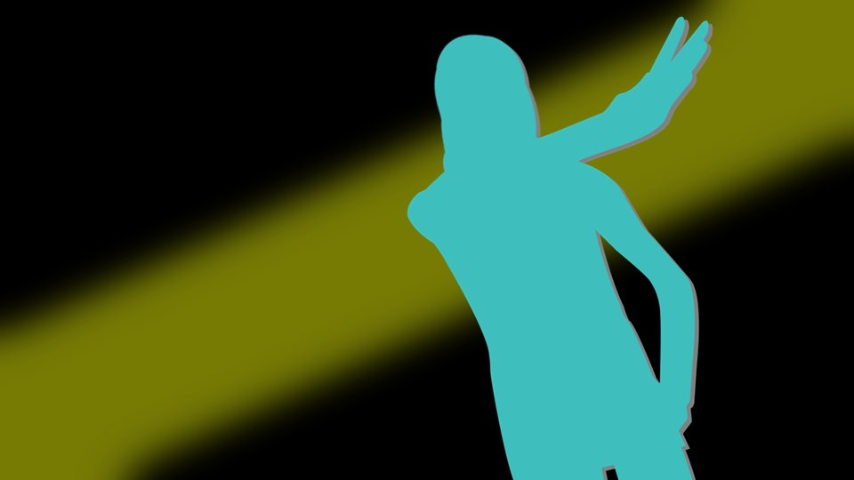
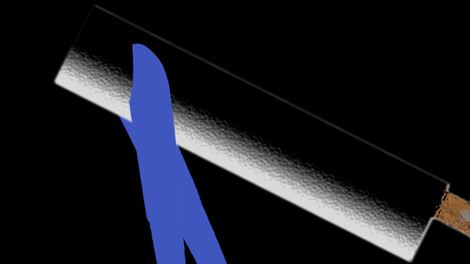
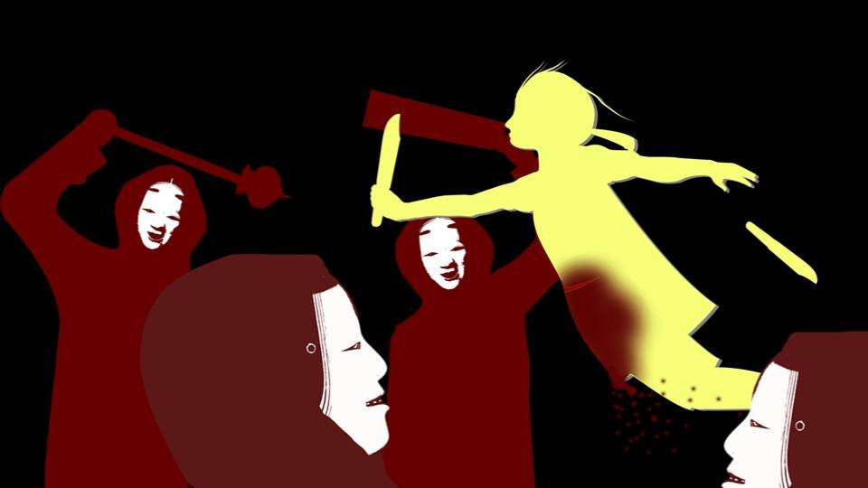
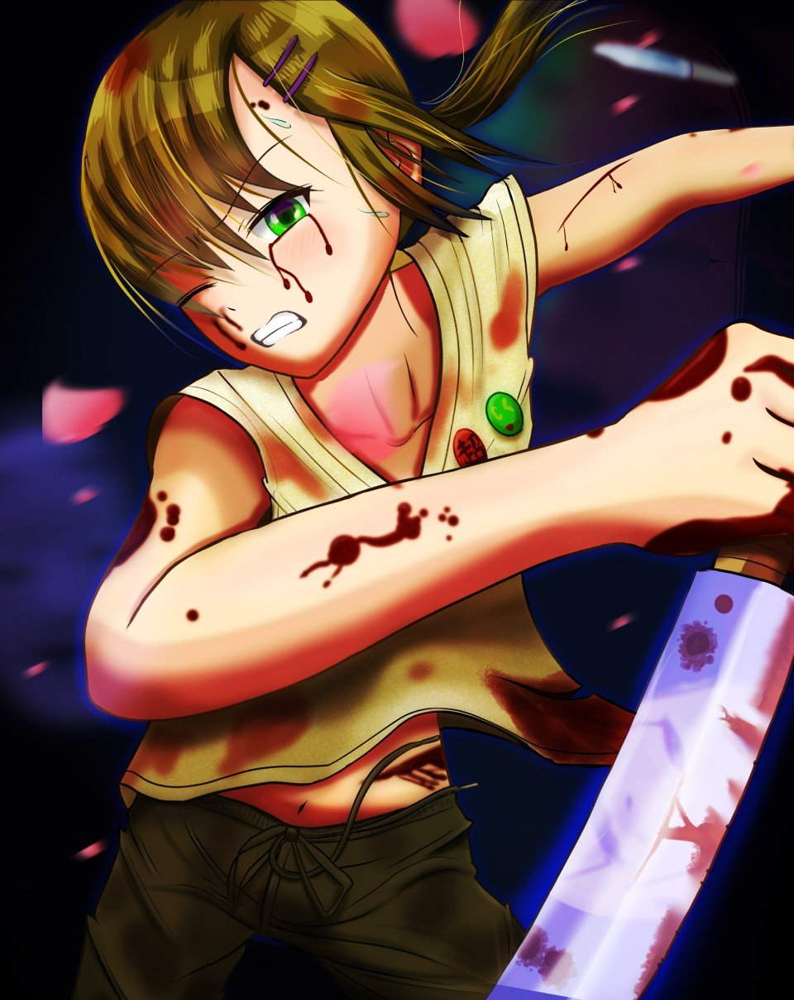
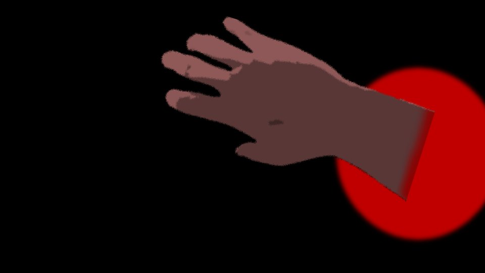

This scene is not unlocked yet in your progress
Forbidden Fruit

"Natsumi! Goto! Get away from Kana right now! You'll get killed!"
I yelled as I burst into the second-floor room.
I yelled as I burst into the second-floor room.


Sure enough, Kana had her knives at the ready...!
Chiga-nee and Kana were Kotaro-san's pawns, and they carried out the curse-killings!
Natsumi's parents have been killed, so now we're in danger too...!
Chiga-nee and Kana were Kotaro-san's pawns, and they carried out the curse-killings!
Natsumi's parents have been killed, so now we're in danger too...!


"Haruka...! Could it be you heard!?"
Natsumi was sitting beside Kana.
But what is this? These guys are way too relaxed!
Saying "could it be" means Natsumi and Goto have figured it out too, right!?
Natsumi was sitting beside Kana.
But what is this? These guys are way too relaxed!
Saying "could it be" means Natsumi and Goto have figured it out too, right!?
"Haruka, wait!"
Mom had come after me.
Mom was unfazed too. How could she be!?
Why does everyone know Chiga-nee and Kana are pawns and still not feel any danger...!?
Mom had come after me.
Mom was unfazed too. How could she be!?
Why does everyone know Chiga-nee and Kana are pawns and still not feel any danger...!?

"Haruka! Listen to me!"
"What's gotten into everybody!! These two are murderers, aren't they!? Kana and Chiga-nee can move like that so they could kill Natsumi's parents, right!? We know now, don't we! Let's just get the cops to arrest them already! Natsumi, Goto, get out of here, quick! Kana's a murderer!"
"What's gotten into everybody!! These two are murderers, aren't they!? Kana and Chiga-nee can move like that so they could kill Natsumi's parents, right!? We know now, don't we! Let's just get the cops to arrest them already! Natsumi, Goto, get out of here, quick! Kana's a murderer!"
A hard blow struck my cheek.
For an instant, my mind went blank.
Not because it hurt enough to make my mind go blank.
It was because, the instant before the blow, I understood what was about to happen to me.
For an instant, my mind went blank.
Not because it hurt enough to make my mind go blank.
It was because, the instant before the blow, I understood what was about to happen to me.

But I couldn't believe it right away.
Because it was the first time in my life it had ever happened.
I... Mom had hit me...
You only raise a hand to a kid when the kid's done something bad, don't you?
I... I haven't done anything bad...
Because it was the first time in my life it had ever happened.
I... Mom had hit me...
You only raise a hand to a kid when the kid's done something bad, don't you?
I... I haven't done anything bad...
At the sound of the slap, the room went silent in an instant.
And the next moment,
And the next moment,

"Haruka...!"
I was held tight in Mom's arms.
In that moment, I realized my thinking was wrong.
Not that some logic that could prove it had come to me.
Mom's attitude was all it took.
I was held tight in Mom's arms.
In that moment, I realized my thinking was wrong.
Not that some logic that could prove it had come to me.
Mom's attitude was all it took.
"Mom... sorry..."
I'd apologized without even realizing it.
Surely Chiga-nee and Kana hadn't killed anyone.
Come to think of it, I still hadn't heard anything about Mom and Chiga-nee switching places.
I'd apologized without even realizing it.
Surely Chiga-nee and Kana hadn't killed anyone.
Come to think of it, I still hadn't heard anything about Mom and Chiga-nee switching places.
"Chigaya-chan, you see...
after she left Arata and learned about the outside world, for the first time she began to question what Kotaro-san had taught her.
Kotaro-san used to say it a lot, I hear. 'Get strong so you can take revenge on your mother's enemy'...
Back in Arata she didn't know anything about the world, but Chigaya-chan finally realized that was wrong.
And she told me. That it might have been Kotaro-san who did it..."
"But... Kotaro-san still hasn't told Chigaya-chan or Kana-chan to kill anyone.
So those two haven't done anything. Just like everyone else, they were only deceived."

"Haruka-chan, I heard too. Daddy did all of it, right?
So I'm gonna protect everyone! I'm strong!"
Always goofing around, Kana had never shown me this side of her before.
Always goofing around, Kana had never shown me this side of her before.
Just what you'd expect of Sakura-san's daughter.
However much anyone tries to dirty them, Sakura-san won't let their hearts be dirtied.
Kana and Chiga-nee are both daughters of the Goddess.
However much anyone tries to dirty them, Sakura-san won't let their hearts be dirtied.
Kana and Chiga-nee are both daughters of the Goddess.

"Mm... Everyone! We'd better get away from Arata as fast as we can!
Auntie, into the car, quick!"
"Got it! Chigaya-chan, what about you!?"
"Mm... I'll follow the car and cover you! There may still be Arata residents down near the foot of the mountain! Kana, help me!"
"Sis...! Okay! I'll do my best!"
"Got it! Chigaya-chan, what about you!?"
"Mm... I'll follow the car and cover you! There may still be Arata residents down near the foot of the mountain! Kana, help me!"
"Sis...! Okay! I'll do my best!"
Kotaro-san could deceive the residents into attacking us.
In that case, there's no point staying here long.
We have to get out as soon as possible.
In that case, there's no point staying here long.
We have to get out as soon as possible.
We'd all come here together for Dad's thirteenth-year memorial service, and now... [TN: Buddhist memorials count the year of death as the first year.]
Dad, I'm sorry.
But now that we've come this far, solving the curse-killings has to be close.
So once things settle down, I'll come see you again...
Dad, I'm sorry.
But now that we've come this far, solving the curse-killings has to be close.
So once things settle down, I'll come see you again...

 video: 桜.wmv
video: 桜.wmvI grabbed whatever luggage I could get my hands on and climbed into the car.
"Everyone! We're going back to Motoki-cho now!"
"The tires haven't been punctured, have they!?"
"Right now Chigaya-chan's checking them!"
"Everyone! We're going back to Motoki-cho now!"
"The tires haven't been punctured, have they!?"
"Right now Chigaya-chan's checking them!"
video: 桜.wmv
"Mm... Auntie, the tires are fine!"
video: 桜.wmv
"Sis! Like we thought, Daddy wasn't in the house!"
"Mm... So he's setting something up after all...? Auntie, go, right now!"
"Mm... So he's setting something up after all...? Auntie, go, right now!"

Chiga-nee gave the signal, and the car set off into the forest.
Grandma would still be down at the foot of the mountain, wouldn't she?
Grandma... please be safe...!
Grandma would still be down at the foot of the mountain, wouldn't she?
Grandma... please be safe...!
"Everyone, keep your heads down! There's no telling what'll happen!"
We squeezed down into the space in front of the seats.
Then I sensed something flying around outside.
We squeezed down into the space in front of the seats.
Then I sensed something flying around outside.
 video: 桜.wmv
video: 桜.wmvSlicing through the storm of cherry petals blown all the way from the Niimura main house in the distance, Chiga-nee and Kana were flying along both sides of the forest road.
Unlike the car, which had slowed down and was weaving along, Chiga-nee and her sister went in straight lines through the gaps between the trees.
It took a mountain they knew well and outstanding reflexes, but this way they could keep pace with the car.
Unlike the car, which had slowed down and was weaving along, Chiga-nee and her sister went in straight lines through the gaps between the trees.
It took a mountain they knew well and outstanding reflexes, but this way they could keep pace with the car.
video: 桜.wmvBut...
wasn't this going too smoothly...?
They could easily have punctured the tires, and it wouldn't have been strange to find traps along the way.
Besides, there'd been no sign of Kotaro-san this whole time, and Grandma was supposedly keeping watch at the foot of the mountain.
Would we really be all right just going on like this...?
They could easily have punctured the tires, and it wouldn't have been strange to find traps along the way.
Besides, there'd been no sign of Kotaro-san this whole time, and Grandma was supposedly keeping watch at the foot of the mountain.
Would we really be all right just going on like this...?
―Before long, moonlight lit up the inside of the car.
We seemed to have come out of the woods. The foot of the mountain was close.
The spot closest to Arata Station, and the most dangerous.
Chiga-nee had said residents were roaming around there, but―
Then the car slammed on the brakes and stopped.
We seemed to have come out of the woods. The foot of the mountain was close.
The spot closest to Arata Station, and the most dangerous.
Chiga-nee had said residents were roaming around there, but―
Then the car slammed on the brakes and stopped.
"Chigaya-chan, Kana-chan! Get in the car, quick!"
Mom opened the window and shouted outside.
But Chiga-nee and her sister made no move to get in.
Mom opened the window and shouted outside.
But Chiga-nee and her sister made no move to get in.

I slowly lifted my head and looked to see what was going on.
What I saw―
was...

A crowd of residents holding maces and nata.
And in front of them...
And in front of them...

"Chigaya... Kana... You understand by now, don't you?
The Kogori family are the ones responsible for killing Sakura.
Natsumi-chan is...
a real witch..."
Kotaro-san said it flatly, in a voice without inflection.
Kotaro-san said it flatly, in a voice without inflection.
The Kogori family killed Sakura-san?
Natsumi is a witch?
Natsumi is a witch?
"Dad! Stop it already!
I...
Dad, I am not your puppet!"

Chiga-nee raised her knife at Kotaro-san.
"Chigaya... You too... You've been brainwashed by the witch too...?"
"Dad...!?"
"Chigaya... You too... You've been brainwashed by the witch too...?"
"Dad...!?"
"Daddy! Natsumi-chan isn't a witch! They're all nice, good people!
So you don't have to be scared, okay?"
"Kana... you too... You've been brainwashed too...?"
"Kana... you too... You've been brainwashed too...?"

"Chigaya, Kana. Tell Natsumi-chan to come over here.
Do that, and I won't do anything to the others."
Natsumi, he says...!?
Just because it's revenge on the Kogori family, he wants even Natsumi...!?
I'll never allow something like that!
I will never allow it!!!
Natsumi, he says...!?
Just because it's revenge on the Kogori family, he wants even Natsumi...!?
I'll never allow something like that!
I will never allow it!!!
"Goto, take care of Natsumi!"
Leaving just those words behind, I got out of the car.
"Haruka, come back here! Haruka!"
Mom was shouting at me.
But I'm not going back.
Natsumi, abandoned? I'll never allow that.
Leaving just those words behind, I got out of the car.
"Haruka, come back here! Haruka!"
Mom was shouting at me.
But I'm not going back.
Natsumi, abandoned? I'll never allow that.

"Kotaro-san. Let Natsumi go, will you...
She's got a lot of people who need her..."
"Haruka-chan, don't you understand? That girl has a witch's power. The special ability to hear the voice of the cherry trees. That's not something an ordinary person can do, is it?"
Kotaro-san's voice was calm and gentle, as if he were patiently reasoning with me.
"Haruka-chan, don't you understand? That girl has a witch's power. The special ability to hear the voice of the cherry trees. That's not something an ordinary person can do, is it?"
Kotaro-san's voice was calm and gentle, as if he were patiently reasoning with me.
But I won't be deceived.
That's how Chiga-nee and Kana... and everyone in the settlement must have been deceived.
That's how Chiga-nee and Kana... and everyone in the settlement must have been deceived.
"Natsumi's no witch. The only witch is this settlement's priest.
And even that's just the name of a role. The kind of real witch Kotaro-san's talking about doesn't exist, and neither do curses."
But Kotaro-san didn't so much as flinch.
But Kotaro-san didn't so much as flinch.
"Haruka-chan... then it can't be helped...
Natsumi-chan herself, then. I'll ask her directly..."
Then the residents behind him brought someone forward.
Two people...?
These people...!
Two people...?
These people...!
"Dad! Mom!"
"Senpai, wait!"
Suddenly Natsumi got out of the car and came running toward us.
"Senpai, wait!"
Suddenly Natsumi got out of the car and came running toward us.

"Natsumi-chan, hold back!"
Chiga-nee held Natsumi down.
Yes, the ones the residents had brought were...
Chiga-nee held Natsumi down.
Yes, the ones the residents had brought were...

"Natsu... mi..."
"Haruka-chan..."
It was Natsumi's parents, badly injured all over.
They hadn't been killed...!
"Haruka-chan..."
It was Natsumi's parents, badly injured all over.
They hadn't been killed...!
"Natsumi-chan. If you come over here, I'll send these two back to your side just as they are."
So they're hostages!? That's way too dirty...!
My dad had that same face. How can this guy be so twisted!
So they're hostages!? That's way too dirty...!
My dad had that same face. How can this guy be so twisted!
"Natsumi...! Hurry... run...!"
"Chiga-nee, let go! If they stay like that, Dad and Mom will...!"
"Hold back, Natsumi-chan!"
"Hold back, Natsumi-chan!"
"Mifuyu...!
Please...
take everyone... and run...!"
"Akane...! Chigaya-chan, Kana-chan! Help those two!"
"Akane...! Chigaya-chan, Kana-chan! Help those two!"

Mom shouted, and Chiga-nee and Kana drew their knives.
But Chiga-nee was in no position to fight.
But Chiga-nee was in no position to fight.
"Chigaya too...
Kana too...
Mifuyu-chan too...
Have you all been cursed, right down to your hearts...?
Chigaya and Kana are too much for me to beat...
It can't be helped...
Everyone... the time has finally come to use that."

Then all the residents behind him took something out from inside their red robes.
Those were... syringes...!?
Those were... syringes...!?
And they stabbed them into their own arms.
The drug... don't tell me...!?
The drug... don't tell me...!?
"Everyone, run! It's Droga! Everyone, hurry!"
Chiga-nee started shouting at the top of her voice.
What's Droga supposed to be!?
Is it the name of that drug!?
What's Droga supposed to be!?
Is it the name of that drug!?
Just then, I felt something pass right by me.
"Good. Well done."
"Good. Well done."

Natsumi was lying collapsed beside Kotaro-san...!?
In that one instant, from Chiga-nee, Natsumi...!?
In that one instant, from Chiga-nee, Natsumi...!?

Chiga-nee had collapsed onto the ground where she stood too.
I couldn't follow that movement with my eyes.
The way Chiga-nee and Kana moved earlier was nothing compared to it...!
There's no way we could ever stand up to something like this...!
The way Chiga-nee and Kana moved earlier was nothing compared to it...!
There's no way we could ever stand up to something like this...!
"Kana, come here. You're still a child. Stay by Daddy's side."
"Daddy...!"
"Ngh... K-Kana...!"
Chiga-nee staggered to her feet. She seemed to have taken a lot of damage.
Chiga-nee staggered to her feet. She seemed to have taken a lot of damage.
"Daddy...
Okay. I'll stay with Daddy after all.
There's no way we can win against this anyway..."
"Kana...!"
"Kana...!"
Kana slowly walked over to Kotaro-san.
"H-hey, Kana!"
"H-hey, Kana!"
"Haruka-chan, sorry. I like Daddy best after all."
Then someone got out of the car.

"Kana-chan! Don't! That person is...!"
"Eri-nee... I knew it. Eri-nee's... just a fake big sis. My real sis and Daddy are who I want."
"No...!"
"Eri-nee... I knew it. Eri-nee's... just a fake big sis. My real sis and Daddy are who I want."
"No...!"
"Hey, Kana! Apologize to Goto! Kid or not, I'm not letting what you just said slide!"
But Kana just stayed where she was, standing beside Kotaro-san.
But Kana just stayed where she was, standing beside Kotaro-san.
"There, there. Kana, you're a good girl after all."
Kotaro-san gave Kana's head a pat.
Kotaro-san gave Kana's head a pat.
"Is this the medicine that makes you strong?"
Kana took the syringe one of the residents had been holding and stared at it closely.
Half of the drug was still left in the syringe.
"Hmm... With this..."
Kana took the syringe one of the residents had been holding and stared at it closely.
Half of the drug was still left in the syringe.
"Hmm... With this..."
Kana stabbed the syringe into her arm.
"Kana, what are you doing! You aren't supposed to use it!"
At that moment, something raced through the residents.

And the residents all collapsed where they stood at once.
"It's true! This drug's amazing!
With this, I think I can save everyone!"

"Kana...!
Y... you...!"
Kotaro-san crouched, clutching his stomach, as a large amount of blood dripped down.
Kotaro-san crouched, clutching his stomach, as a large amount of blood dripped down.
"Daddy, you always used to say it, didn't you...
Mommy's killer, I was supposed to get strong to pay them back, you said.
When I found the culprit, I was supposed to take revenge on Mommy's enemy, you said.
I...
did it, right?"
Kana dropped her gaze to Kotaro-san as he crouched there, staring down at him.
Kana dropped her gaze to Kotaro-san as he crouched there, staring down at him.
"So Daddy was a bad person after all."
"Ngh...!"
"I kept thinking and thinking. Daddy being the culprit is something I don't want to believe. But... someone in this settlement is the culprit, no doubt about it. Grandma or Sis could be the culprit too."
"Ngh...!"
"I kept thinking and thinking. Daddy being the culprit is something I don't want to believe. But... someone in this settlement is the culprit, no doubt about it. Grandma or Sis could be the culprit too."
"Kana...!
Why won't you do what I say...!"
"Who would it have to be for me to be okay with it? Is it fine as long as it's not family? If it was family... what should I do? Is it okay to just leave it alone and abandon everyone?"
"Who would it have to be for me to be okay with it? Is it fine as long as it's not family? If it was family... what should I do? Is it okay to just leave it alone and abandon everyone?"
"I...
ngh...!"
"That's not okay. Mommy's killer can't be forgiven, and neither can the culprit behind the curse-killings. If the culprit is family... if they've been deceiving us the whole time... If the culprit is Daddy... Daddy would be the one I could forgive least."
"That's not okay. Mommy's killer can't be forgiven, and neither can the culprit behind the curse-killings. If the culprit is family... if they've been deceiving us the whole time... If the culprit is Daddy... Daddy would be the one I could forgive least."
"I wanted to believe in Daddy till the very end.
Daddy always, always mattered so much to me.
Daddy, I thought, would save everyone.
But if you're going to do things like this, I have to face reality too."
"You're...
wrong...!"
"The one who's most wrong is Daddy. Not just the people in the settlement, now it's Natsumi-chan too, and Eri-nee... Daddy, how many people are you going to kill? Are you going to kill even more people from now on? Will you be satisfied once you've killed dozens, hundreds of people? Then... I have no choice but to stop you. 'Cause I'm strong. 'Cause I want to save everyone. Daddy... any more than this... 'cause I don't want you to be a bad person."
"The one who's most wrong is Daddy. Not just the people in the settlement, now it's Natsumi-chan too, and Eri-nee... Daddy, how many people are you going to kill? Are you going to kill even more people from now on? Will you be satisfied once you've killed dozens, hundreds of people? Then... I have no choice but to stop you. 'Cause I'm strong. 'Cause I want to save everyone. Daddy... any more than this... 'cause I don't want you to be a bad person."

"This kid...!"
"This one's... a witch too!"
Several of the residents staggered to their feet.
"This one's... a witch too!"
Several of the residents staggered to their feet.
"That's right! I'm the witch! Mommy died right after I was born!
I was born by taking Mommy's life!
So I'm the one who killed Mommy!
I'm the culprit behind the curse-killings! I killed everyone!"
"Kana...!"
"Kana...!"
"Haruka-chan, take everyone and run."
"Are you an idiot!? You're coming with us!"
Then Kana's side
"Are you an idiot!? You're coming with us!"
Then Kana's side

slowly began to turn red with blood.
"This drug... it's amazing... I can't feel any pain...
Just now I tried to cut everybody's Achilles tendons, but I messed up on a few...
and I got cut too..."

"Rraaaagh!!!"
One of the residents came at Kana with a nata.
One of the residents came at Kana with a nata.

It was Chiga-nee who cut in front of Kana and caught it with her knife.
"Haruka, please...! Ngh...! I'll... hold them back...! Arata's business... the people of Arata will settle it!"
"Chiga-nee, are you an idiot!? Get out of here, now!"
"Haruka, please...! Ngh...! I'll... hold them back...! Arata's business... the people of Arata will settle it!"
"Chiga-nee, are you an idiot!? Get out of here, now!"
video: 桜.wmvBut Chiga-nee couldn't withstand that monstrous strength, and the nata cut her body in two.
video: 桜.wmv"Ch... Chiga-nee...!"

video: 桜.wmv"Haruka-chan, Eri-nee! Get everyone in the car, quick!
My eyes...
are getting blurry...!"

video: 桜.wmvKana was flying around among the residents faster than the eye could follow, screaming.
But Kana's movements were getting slower and slower.
Blood dripped from where she'd been cut, and cutting the residents with her knives drenched her in their blood as well.
Kana's whole body was being dyed red, deep, deep red.
But Kana's movements were getting slower and slower.
Blood dripped from where she'd been cut, and cutting the residents with her knives drenched her in their blood as well.
Kana's whole body was being dyed red, deep, deep red.
video: 桜.wmv"Goto! Get Natsumi's parents into the car! I'll get Natsumi!"
"Y-yes!"
"Y-yes!"
video: 桜.wmvGoto rushed over to Natsumi's parents, and I dragged Natsumi along the ground.
video: 桜.wmv
"Wait...!"
video: 桜.wmvKotaro-san was sprawled on the ground, gripping Natsumi's ankle.
video: 桜.wmv"Drop dead, you fatso!"
I kicked Kotaro-san in the face as hard as I could.
"Let go, you jerk!"
But Kotaro-san wouldn't let go.
I kicked Kotaro-san in the face and stomped on his arm again and again, but he showed no sign at all of letting go.
I kicked Kotaro-san in the face as hard as I could.
"Let go, you jerk!"
But Kotaro-san wouldn't let go.
I kicked Kotaro-san in the face and stomped on his arm again and again, but he showed no sign at all of letting go.
video: 桜.wmv"This witch...
The divine messenger...!
I'll never...
let her get away...!"
Why is this guy so obsessed with Natsumi...!?
Witch, divine messenger... what's he going on about...!
Why is this guy so obsessed with Natsumi...!?
Witch, divine messenger... what's he going on about...!
video: 桜.wmvJust then, I saw something swing down between me and Kotaro-san.

video: 桜.wmvOn the ground lay Kotaro-san's arm.
video: 桜.wmv
"Grandma!?"
Grandma had a nata gripped in her hand.
"Kotaro... Honestly, you people..."
Grandma had a nata gripped in her hand.
"Kotaro... Honestly, you people..."
video: 桜.wmv"M... om...
I..."
"So what happened 10 years ago was a mistake after all."
"Sakura... Sa... kura..."
Kotaro-san got that far, then stopped moving, like an empty shell.
"So what happened 10 years ago was a mistake after all."
"Sakura... Sa... kura..."
Kotaro-san got that far, then stopped moving, like an empty shell.
video: 桜.wmvBefore I knew it, the sounds of Kana fighting the residents had stopped too.
And cherry blossoms that shouldn't exist in this place were fluttering down.
Were these cherry blossoms an illusion?
If they are... then all of this horrible scene... let it be an illusion...
And cherry blossoms that shouldn't exist in this place were fluttering down.
Were these cherry blossoms an illusion?
If they are... then all of this horrible scene... let it be an illusion...
Read ✓ Next: I Came to See You. →